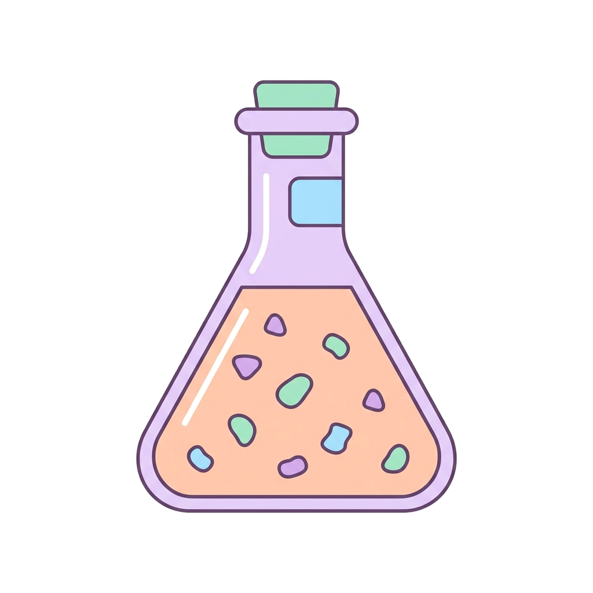
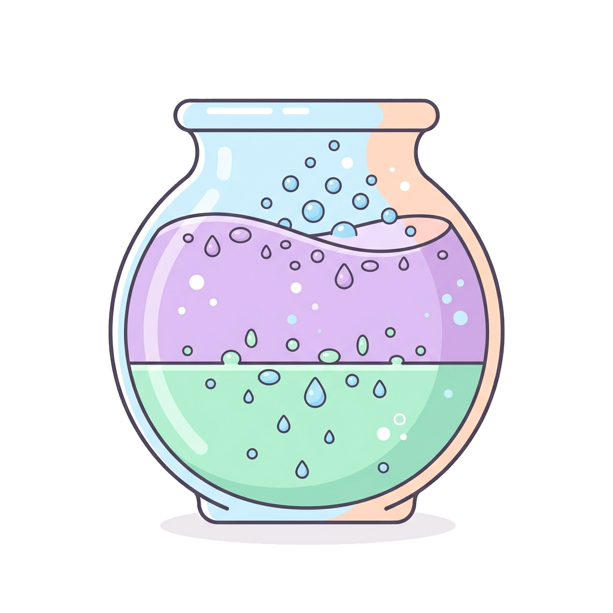

Forme liquide
Soluzione
Formulazione chiara e omogenea (monofase), con il principio attivo completamente disciolto nel solvente. Può essere di due tipi:
Soluzione di consistenza viscosa, ottenuta con un'alta concentrazione di zuccheri o di agenti addensanti.
Soluzione idroalcolica (acqua + alcol), con viscosità inferiore allo sciroppo e sapore dolce.

Sospensione
Forma liquida in cui le particelle solide restano disperse (galleggianti), senza dissolversi nel liquido: è un sistema eterogeneo, va agitata prima dell'uso.

Emulsione
È composta da due liquidi che non si mescolano (immiscibili, come acqua e olio): uno è disperso in goccioline dentro l'altro.
Le goccioline di olio sono disperse in una fase acquosa continua.
Le goccioline d'acqua sono disperse in una fase oleosa continua.